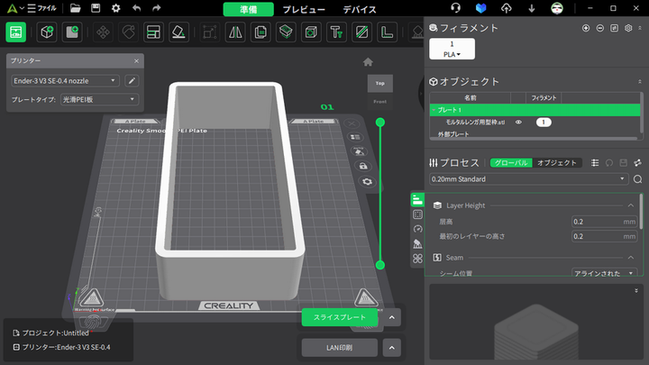
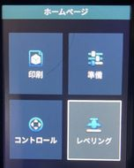

- Top
- 3D
- 3Dプリンタ Creality Ender-3 V3 SE で印刷
3Dプリンタ Creality Ender-3 V3 SE で印刷
印刷準備（印刷用Gコードファイル生成）（PC）
- 3DCAD等で3DモデルをデザインしてSTLファイルを生成
- OpenSCADやSolidPythonを利用して3DモデルをデザインしてSCADファイルを生成
- OpenSCADでSCADファイルからSTLファイルを出力
- Creality Print (ver 5.1)を起動して、Gコードファイル生成
- スタートメニューから
Creality Printを起動
- [ファイル]-[インポート]-[モデルファイル]からSTLファイルを開く
- [スライスプレート]

- メッセージ
The model has not been supported and may fail to print. Do you want to continue adding supports before slicing ?が表示されたら
Add Support指定してSlice（メッセージは旧バージョン）
- G-codeのプレビューが表示される
- スライスプレート下がLAN印刷なら、LAN印刷の右の[Λ]で表示されるメニューから[ローカルにエクスポート]を指定
- [ローカルにエクスポート]からファイル名を指定してGコードファイルを[保存]
- GコードファイルをSDカードに入れる
- Gコードは3Dプリンタ制御コード（NC標準制御コード）
印刷（3Dプリンタ）
- SDカード挿す（上下逆なので要注意）
- 付属SDカードにサンプルGコードファイルが入っている
- プリンタ電源ON（本体左側に電源スイッチがある）
- レベリング
- ボタン（回転式押しボタンスイッチ）を回して
レベリングに移動してボタンを押す

完了したらはい
- （経験則）毎回レベリングを実施した方が良さそう
準備 / PLA予熱
- 200度に上昇するまで待つ
- ヘッドのフィラメント固定レバーを下方に押しながらフィラメントをノズル奥へ押し込み、ノズルからフィラメントが少し解け出たことを確認
戻る
印刷 / モデル選択
- モデルファイルを選択する
- モデルファイルが表示されない場合は、SDカードを挿し直してからやり直す
- 英数字以外のファイル名は正常に表示されないが印刷できる
- キャリブレーションが
OFFのままはい（OFFからはいに移動してから押す）で印刷開始
- 印刷しないまま
完了になった場合は、印刷 / モデル選択からやり直す
- 開始直後の印刷状況を確認し、印刷不良の場合はZ軸補正値を修正してから印刷し直す（印刷状況を確認せずにZ軸補正値を修正するのは良くない）
印刷中止または一時停止
設定 / Z軸補正、値を-方向（下方）に調整
- 再び
印刷または再開
- 印刷し終わったら生成物とシートを外して（このタイミングで必ず生成物を取り外す）
はい
準備 / 解きほぐすでゼロに戻る

- アンローディングが終わったら、フィラメントを抜いて
はい
戻る
- プリンタ電源OFF